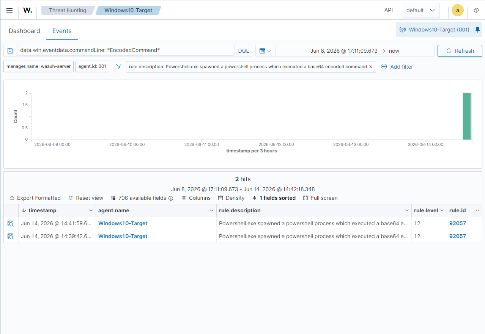
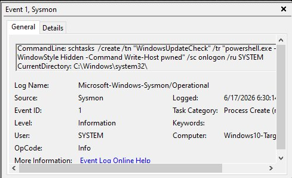
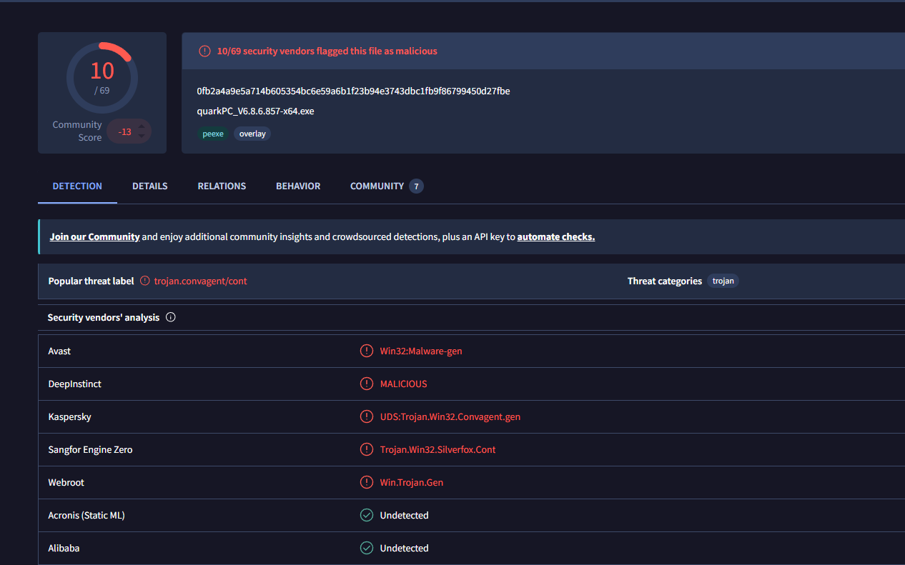
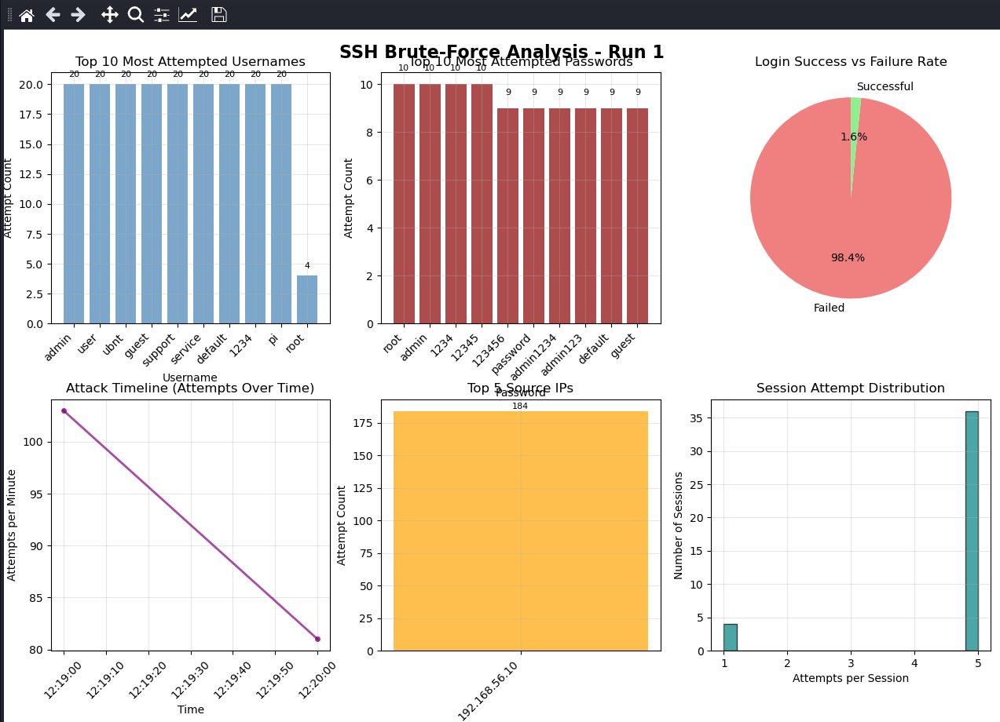
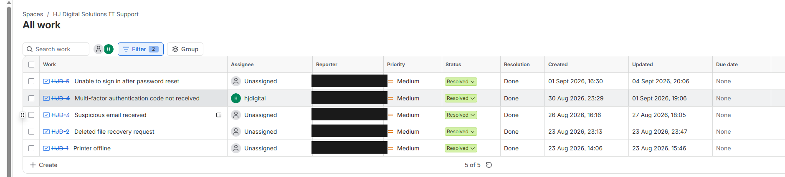

Evidence of work
Screenshots from the labs and from the helpdesk. Every lab image below is also in the public repo it came from, with the full incident report sitting next to it. Click any of them to see it full size.
The helpdesk screenshot is redacted. Customer email addresses are covered with a solid fill rather than a blur, because a blur can sometimes be undone. Ticket references, statuses and dates are left alone. The lab screenshots aren't redacted because those environments are mine and isolated, and the 192.168.56.0/24 addresses in them are host-only VirtualBox networks with no route out.

21 hits on Windows Event 4625. Each individual failure fires rule 60122 at level 5, which on its own is noise. Wazuh correlates the burst into 60204, "Multiple Windows Logon Failures", at level 10. That second one is the alert you'd actually work.

A DQL hunt across 706 available fields for data.win.eventdata.commandLine: *EncodedCommand*, which brings back two level 12 hits on rule 92057. Encoding a PowerShell command in base64 is a cheap way to get it past anyone reading logs quickly, so it's worth looking for on purpose.

Sysmon Event ID 1 with the whole command line intact: a scheduled task called WindowsUpdateCheck, running PowerShell with -WindowStyle Hidden as SYSTEM at logon. The name is picked to look boring in a task list. The flags are what give it away.

A SHA-256 put through VirusTotal and MalwareBazaar. 10 of 69 vendors flagged it, under the family label trojan.convagent. A ratio that low isn't an all-clear, it's a reason to stop trusting signatures and go and look at what the file actually did.

Six panels out of enhanced_credential_analyzer.py: top usernames and passwords, the 98.4% / 1.6% split, the attack timeline and per-session attempts. The username counts come out almost perfectly flat, which is what a wordlist looks like when you chart it.

Real customer tickets in Jira Service Management: a password reset lockout, an MFA code that never arrived, a suspicious email, a deleted file recovery and a printer offline. All resolved and documented. The suspicious email one is the reason phishing triage is on my CV.